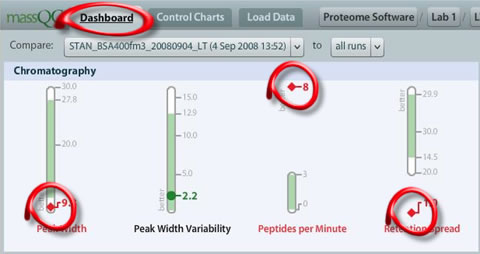
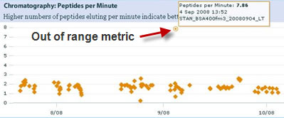
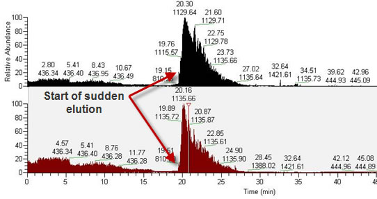
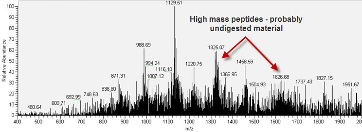

In this current example, we view multiple out of range metrics from the MassQC Dashboard in a single category, Chromatography :

The metric that is most out of range seems to be the Peptides Per Minute , although Retention Spread is quite low as well:

There could be several reasons for this problem, but lets look at the elements of the diagnosis. It is not uncommon to see undigested protein eluting in the late stages of the gradient. For some reason the peptides (or other material) accumulates, and then when the percent organic solvent concentration increases to a critical point, the material comes loose, and quickly elutes off the LC column. Another reason for this could be the particular LC method used. Perhaps the technician created a new, experimental gradient and didn't check it first; perhaps the wrong LC gradient was used. Often, problems with solvent mixing at the pumps (for example, an increased ratio of organic to aqueous) can cause a sudden elution of hydrophobic species.
As the number of peptides eluting per time increased, the amount of time the peptides took to elute is decreased. These two metrics described different angles to this problem:

As can be readily seen, most of the material comes out early and then between 20 and 25 minutes. Not only is the Retention Time Spread low, but the molecular weights of the ions are higher than expected if the trypsin digest had worked well. This mass spectrum shows this flag:
